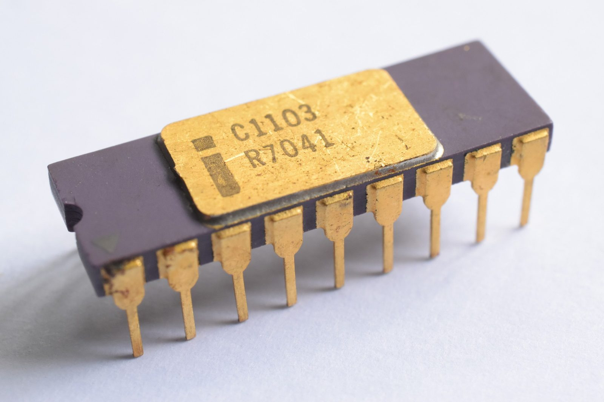
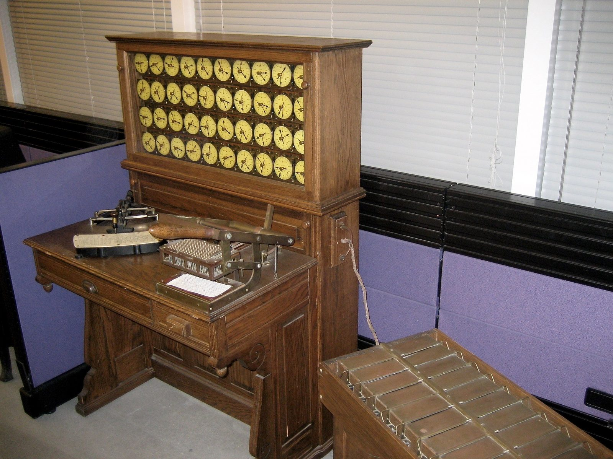
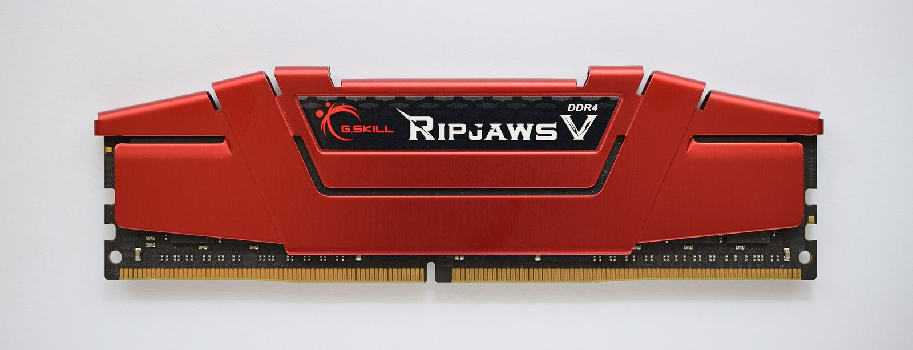
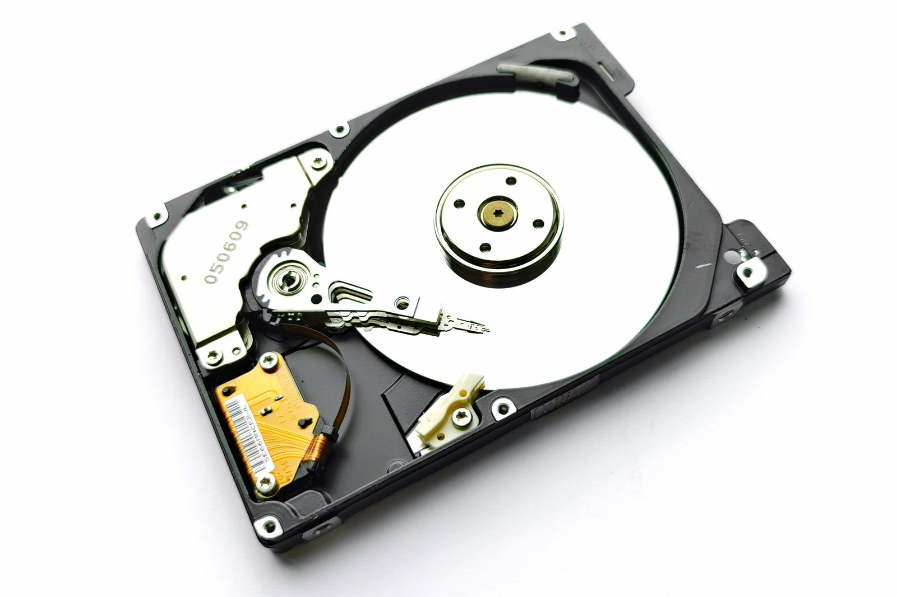

Unit 1 · Lesson 5
Memory: the workbench and the pantry
Turn your phone off and on again. The photos are still there, but the open apps are gone. Two kinds of memory, two stories.
The story
In 1970 Intel sold the 1103, the first DRAM chip on sale. DRAM is memory made of transistors and tiny electric charges. It is fast, but the charges leak away, so the chip must refresh them all the time. Without power, it forgets everything. The 1103 held 1,024 bits: 128 bytes.


Inside your computer today: the RAM chips next to the CPU. A phone has about 8–16 GB, and many laptops 16 GB or more. More RAM means more apps can stay open at the same time.
Memory that remembers is older. For the 1890 US census, Herman Hollerith's machines counted the people from punched cards: a hole in a certain place stood for one fact, like a man or a woman. A machine read the holes with electricity and moved the counters.


Then came magnetic tape (UNIVAC I, 1951): data written as tiny magnetic spots on a long tape. To find something, you had to wind the tape to it. In 1956 IBM's first hard disk held about 5 million characters on 50 spinning disks, and an arm could jump straight to any record.
Today an SSD (solid-state drive) keeps data as charges trapped in flash chips, with no moving parts. SSDs spread through laptops in the 2010s. Inside your computer today: the SSD in your laptop and the flash memory in your phone.
The science
RAM: the workbench
RAM (random access memory) holds what the computer is working on right now: the open apps, the document you are typing. In the kitchen it is the workbench: the cook can only work on what is on the bench. RAM is very fast, but it forgets everything when the power goes off.
- The cook = CPU core
- The metronome = clock (GHz)
- The countertop = cache
- The workbench = RAM
- The pantry = storage (SSD / HDD)

.jpg){kind=link}
Storage: the pantry
Storage keeps your files, apps and photos, even with the power off. In the kitchen it is the pantry. Saving a file means copying it from the workbench (RAM) to the pantry (storage). That is why you lose your work if the power goes off before you save.
- The cook = CPU core
- The metronome = clock (GHz)
- The countertop = cache
- The workbench = RAM
- The pantry = storage (SSD / HDD)
Two kinds of pantry: HDD and SSD
An HDD (hard disk drive) is the 1956 idea, made small: a metal plate spins and an arm moves over it to read and write. It is cheap and big, but slow. An SSD keeps data in flash chips. Nothing moves, so it is fast and silent, but it costs more. From fastest to slowest: RAM, SSD, HDD, a USB stick, the cloud.
- The cook = CPU core
- The metronome = clock (GHz)
- The countertop = cache
- The workbench = RAM
- The pantry = storage (SSD / HDD)


How much, and how fast
A byte is 8 bits. A megabyte (MB) is about a million bytes. A gigabyte (GB) is about 1,000 MB, and a terabyte (TB) is about 1,000 GB. Speed is measured in MB/s: megabytes per second. If you copy 500 MB in 10 seconds, the speed is 500 ÷ 10 = 50 MB/s. Time = size ÷ speed.
Check now
Quick questions. You see the answer at once.
RAM keeps your files when the power goes off.
True or false?
Which kind of storage has no moving parts?
- HDD
- SSD
- both
You copy a 500 MB file in 20 seconds. What is the speed in MB/s?
Try it
Put each kind of memory on the map: how fast is it, and how much does it hold? Drag a chip, or click a chip and then a square. Then press Check.
Paper version
From fastest to slowest, with a typical size: Cache (the countertop): fastest, tiny (a few MB). RAM (the workbench): very fast, small (8–32 GB); forgets when the power goes. SSD (the fast pantry): fast, very big (0.5–4 TB); keeps everything. HDD (the slow pantry): slow (spinning disk, moving arm), very big. USB stick (a lunch box you carry around): slow, big (32–256 GB). Cloud (a warehouse across town): slowest (through the internet), almost no limit.
Your turn
Exercises
From ★☆☆ (easy) to ★★★ (hard). Use a hint if you are stuck.
-
Exercise 1 ★☆☆
Match each kind of memory to its place in the kitchen.
- RAM — ?
- SSD — ?
- HDD — ?
- cloud — ?
-
Exercise 2 ★☆☆
An HDD has a spinning plate and a moving arm.
True or false?
-
Exercise 3 ★☆☆
Put these ways of storing data in time order, oldest first.
- IBM's first hard disk (1956)
- magnetic tape (1951)
- punched cards for the US census (1890)
- SSDs spread through laptops (2010s)
-
Exercise 4 ★★☆
Put these in order, from the fastest to the slowest.
- cloud
- HDD
- RAM
- SSD
-
Exercise 5 ★★☆
A USB stick copies at 30 MB/s. How many seconds does it take to copy a 600 MB file?
-
Exercise 6 ★★☆
A phone has 128 GB of storage and 112 GB are used. Each photo is about 4 MB. About how many more photos fit? (Use 1 GB = 1,000 MB.)
-
Exercise 7 ★★☆
A laptop's spec sheet says '16 GB RAM · 512 GB SSD'. Which number tells you how many apps can stay open at once?
- 16 GB RAM
- 512 GB SSD
- both the same
-
Exercise 8 ★★★
You are writing an essay. The power goes off before you press Save. Use the kitchen to explain what is lost and why.
In one sentence
RAM is the workbench and forgets; storage is the pantry and remembers.
Words of the chapter
- RAM
- the workbench: fast memory that forgets when the power goes off RAM (memoria di lavoro)
- storage
- the pantry: keeps files and apps with the power off memoria di massa
- punched card
- a card with holes in it; each hole stands for a piece of data scheda perforata
- HDD
- hard disk drive: a spinning plate and a moving arm disco rigido (HDD)
- SSD
- solid-state drive: flash chips, nothing moves unità a stato solido (SSD)
- MB · GB · TB
- megabyte, gigabyte, terabyte: each about 1,000 times the one before MB · GB · TB
- MB/s
- megabytes per second: how fast data is copied MB/s (megabyte al secondo)